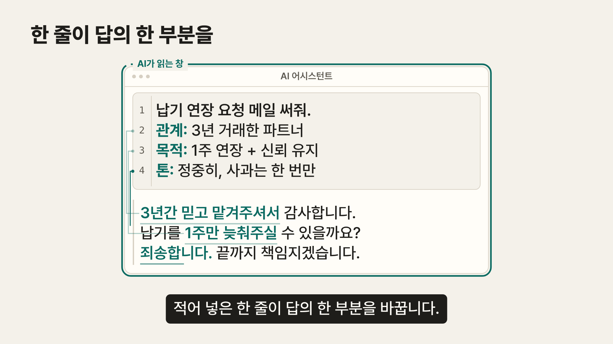
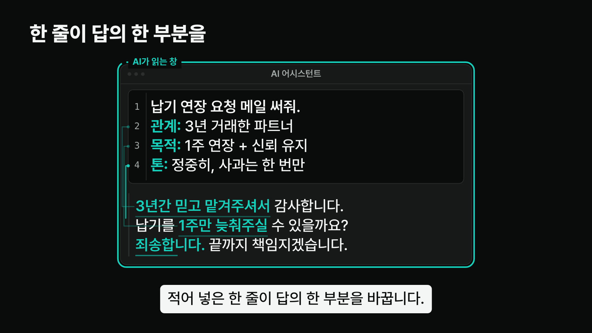
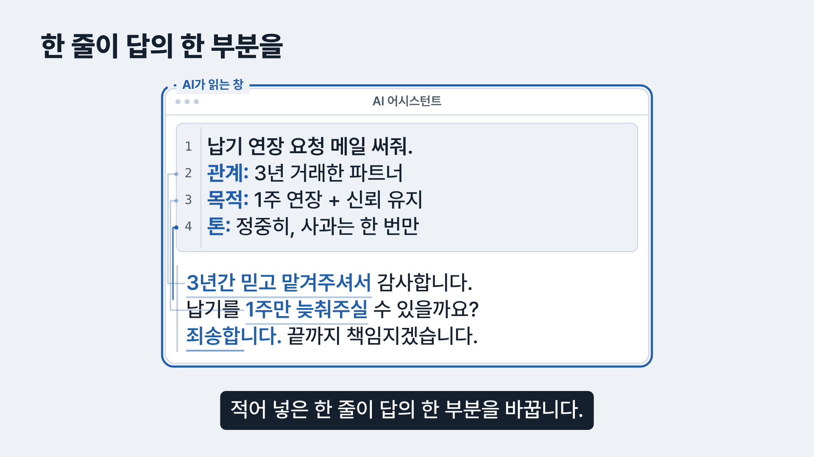

설명 영상 — 디자인 방향 3안
같은 장면(증명 파트, 41.6초: 적어 넣은 세 줄이 답의 세 부분과 이어진 순간)을 세 가지 토큰으로 그렸습니다. 레이아웃·움직임·문구는 같고, 색과 바탕만 다릅니다.

따뜻한 종이색 바탕, 청록 한 색. 실제 채팅 창처럼 보여 "내 일"로 읽히고, 대비가 모든 글자에서 5:1 이상입니다.

저장소의 Teal Noir 룩. 쇼릴에는 맞지만, 설명 영상에서는 "AI 홍보" 분위기가 앞서고 따뜻한 바탕 원칙과 어긋납니다.

도면 같은 차가운 톤. 원리 설명에는 어울리지만 메일을 쓰는 일상 장면과 거리가 멀고, 브랜드 청록과도 이어지지 않습니다.
결정 기록
| 질문 | 답 |
|---|---|
| 누구를 위한가 | AI 어시스턴트를 이미 쓰지만 "짧게 물어도 알아서 맞춰 쓴다"고 믿는 직장인. |
| 무엇을 전하나 | AI는 창에 적힌 글만 읽는다. 사정을 적지 않으면 빈칸으로 남는다. |
| 이름이 필요한가 | 하나만. 창에 "AI가 읽는 창"이라는 이름을 붙이고 끝까지 같은 이름을 씁니다. 나머지(관계·목적·톤)는 사용자가 이미 쓰는 말이라 새 이름을 만들지 않았습니다. |
| 왜 A인가 | 실제 화면에 가장 가깝고, 바탕이 조용해서 움직이는 한 가지에 시선이 갑니다. 청록은 저장소 브랜드 색을 어둡게 내려 글자 대비를 맞췄습니다. |
| 뺀 것 | 네온 글로, 파티클, 그라데이션 타이틀, 지표 숫자, 마스코트, 은유 일러스트. 쇼릴에서 쓴 장식은 이 영상의 목적에 쓸모가 없어 모두 뺐습니다. |